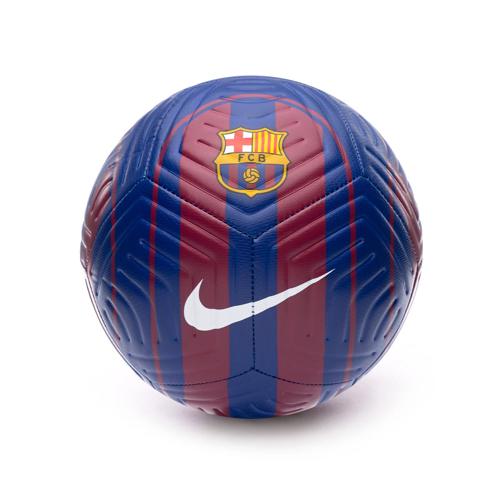

Futebol Clube Barcelona
Clube De Futebol
Futebol Clube Barcelona, mais conhecido como Barcelona e coloquialmente como Barça, é um clube de futebol profissional sediado em Barcelona, na Catalunha, uma comunidade autônoma da Espanha. Compete na La Liga, a principal competição do sistema de ligas Espanhol. Manda suas partidas no Camp Nou, para 99.534 pessoas, desde a inauguração do estádio em 1957. Fundado em 1899 por um grupo de futebolistas Suíços, Ingleses e Catalães, o clube se tornou um símbolo da cultura Catalã e do nacionalismo Catalão. Ao contrário de outras equipes de futebol, os próprios torcedores é que operam o funcionamento do clube, motivo pelo qual utiliza o lema Més que um club
. O Barcelona é o segundo clube de futebol mais valioso do mundo, com seu valor estimado em $3.2biliões, e o clube de futebol mais rico em termos de receita, com um volume de negócio anual de 835,4miliões de reais. Nacionalmente, o Barcelona conquistou 27 vezes a La Liga, 31 copa del rey, 14 Supercopa da Espanha, três copa Eva Duarte e duas vezes a copa da liga Espanhola, sendo o detentor do maior número de troféus nas quatro últimas competições citadas. No que diz respeito ao futebol internacional, o clube sagrou-se vencedor da LIGA DOS CAMPEÕES DA UEFA
cinco vezes, e cinco triufos da SUPERCOPA DA UEFA
e quatro a Taça dos clubes vencedores de taças
, três a Taça das cidades com feiras
, dois a Taça Latina,
e por último três a Copa do mundo de clubes da FIFA
. O Barcelona esteve na primeira posição do ranking mundial de clubes da IFFHS
em 1997, 2009, 2011, 2012 e 2015, e atualmente ocupa a segunda posição no ranking de clubes da UEFA.
a principal rivalidade do time é com o Real Madrid
onde as partidas entre as duas equipes são chamada de El clásico
.
| Fundação | 29 de Novembro de 1899 |
| Arena/Estadio | Estádio Olímpico Luís Companys |
| Técnico | Hans-Dieter Flick |
| Localização | Barcelona, Espanha |
| Campeonatos | La Liga, Liga dos Campeões da UEFA e Copa del Rey |
| Alcunhas | Barça, Més que un club (Mais que um clube) |
| Torcedores(a)/Adepto(a) | Barcelonistas, Culés ou culers Braugranas ou Azulgranas |
| Mascote | L'avi del Barça (O avô do Barça) |
| principal Rival | Real Madrid, Espanhol, Atlético de Madrid, Atletic Bilbao |
| Estádio | Spotify Camp Nou |
| Capacidade | 99.534 |
| Patrocinador(a) | Spotify, Ambilight, UNHCR |
| Material(de)esporte | Nike |
| Website | fcbarcelona.com |